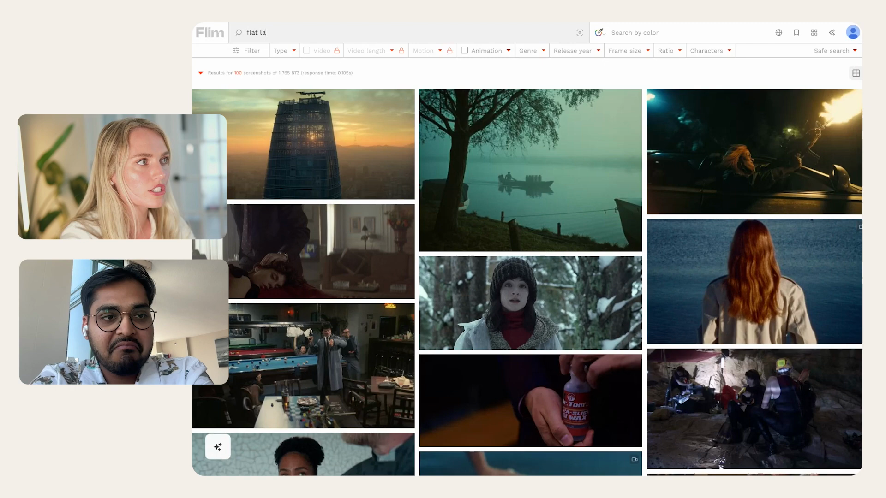
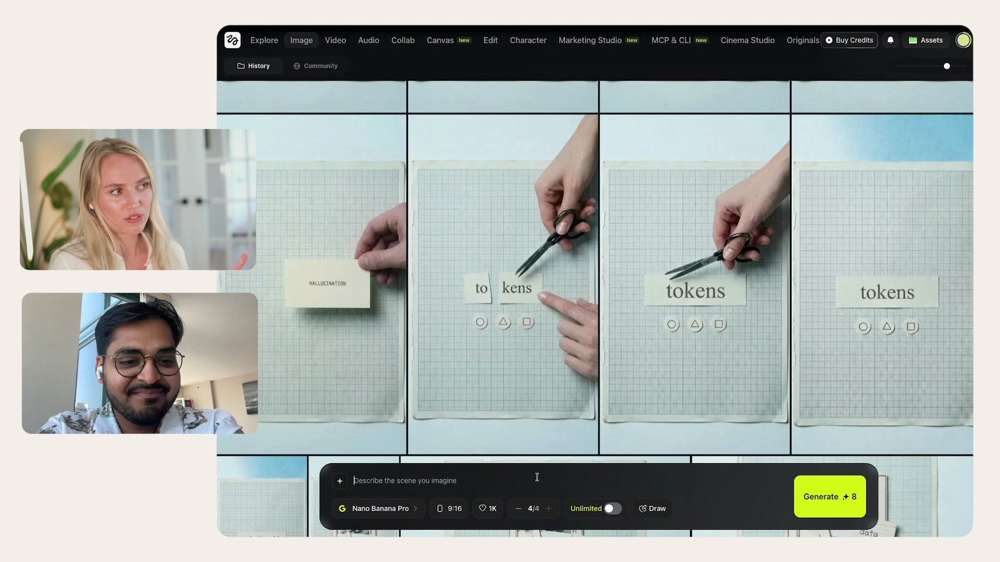
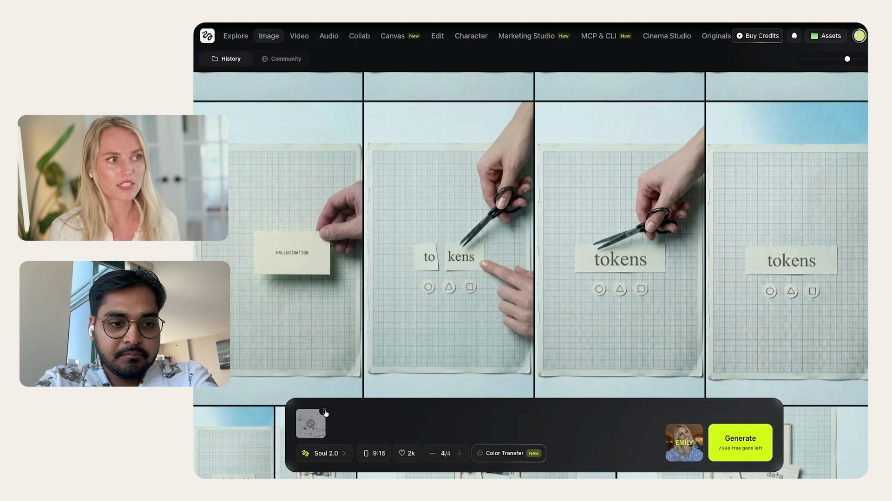

One document covering how we make cinematic, cohesive market content that reads as one brand. The method, the toolchain, the proof, and the full interview behind it.
Materiality is a short-form markets briefing for the people who allocate capital in the AI transition. Each piece takes one structural force and says whether it is material, meaning important enough to change how you are positioned, or whether it is noise.
Atelier Superintelligence publishes it. AI Alpha is the disclosed thesis. Michael fronts it on camera, for real. The logo is the MATERIALITY wordmark.
Domains secured: materiality.ca · materiality.pro
Two formats. A countdown ladder, like a "5 stages" structure, becomes our trailer (the "5 Forces"). A single-story reel, one fascinating thing followed to a payoff, becomes our episode format.
The deck puts it plainly. No startup out-researches Goldman on engine alone, so the moat that compounds is content. It has to look cinematic, and it has to look like ours.
Cohesion is the whole game. Every frame should look like one intentional world, and that comes from a single discipline. Here is Emily's own answer for why her reels travel:
Her full behind-the-scenes pipeline, pulled from the interview. The complete transcript is in section 13.
An AI-native pipeline, run from a single chat. Nano Banana Pro runs inside Higgsfield, so it stays one ecosystem.
Works the angles, drafts, storyboards the visuals, writes every prompt, and drives the generation loop via the Higgsfield MCP.
A searchable library of real cinema stills. We pull the grade and lock it as our reference.
The image model, generated inside Higgsfield. The Gemini API stays as a cheaper bulk fallback.
Stills and animation in one place: Kling 3.0, multi-shot, Soul 2.0 character, end-frames. All driven from Claude.
Natural-voice dictation so the script reads like Michael, around 70% his words.
Filmed for direct-to-camera. A Soul 2.0 digital double places him into cinematic b-roll scenes without a shoot.



Angles, then a draft, then revisions by voice. The hooks carry the most weight.
Multiple takes, no teleprompter. Then design the visuals around it.
The direction, plus what we will not do. A tactile concept turns into color schemes and prompts.
Source the grade from real cinema and set the reference image.
Land the hero still, then make it the reference for everything else.
Subtle camera motion. Keep the best one or two seconds.
End-frame chaining for builds, then assemble to a tight pace.
subtle camera motion with Kling 3.0 and multi-shot. subtle subject motion when a person is in frame.The narrator is always real. The double is only set-dressing in b-roll, never the talking head.
Before our own content, we reproduce Emily's "5 stages of AI" reel one-to-one as an internal benchmark, the same shots through our pipeline, to test cohesion, the end-frame build, and the motion against a known-good target. The six-point match scorecard is in MATERIALITY-EMILY-REPLICA-BUILD.md. This is an internal benchmark only. What we publish or show is our own content, never a side-by-side.
The content grows on two pillars, held together by one promise: cut through the noise to what is material. The markets pillar earns the credibility. The big-picture pillar grows the audience.
The five forces, what is mispriced, signal versus noise, for allocators and advisors. This is the thesis and the credibility core. The "5 Forces" trailer below is the first piece.
Explainers on the structural shifts in AI: the 5 stages, what AGI would actually mean, why agents change the game, where the real bottlenecks sit. Not how-tos. The conceptual map a decision-maker needs to grasp what is material. This is the shareable top of the funnel.
We borrow the format and depth from what is resonating (Sean's pulls in reference/content-refs/, a deep AI breakdown at 4.7K saves), but not the tutorial angle. Our topics are the big structural ones, like the 5 stages of AI and what is hype versus what is material.
The trailer, the 5 forces, the big-picture explainers. Higher production, slower to make, the brand builders. This is the Emily craft, and it is where we start.
A fast talking-head pick, around two minutes: the one thing in AI that is actually material today, and why. Cheap, high frequency, builds the habit and feeds the bigger pieces. This is the Nicholas Thompson format with the Nate Jones angle.
On cadence: daily is the long-term goal, not the start. We begin with the cinematic pieces and ramp the take format up as the system gets faster and cheaper to run. The franchise to own is "What's Material." It is one word sharper than Thompson's "Most Interesting Thing in AI," and more useful to an investor.
| Beat | On the desk | Motion |
|---|---|---|
| Setup | THE MODELS (demoted) | end-frame to next start |
| 1 · Power | + POWER card | hand places card |
| 2 · Agents | + AGENTS card | hand places card |
| 3 · Labor | + LABOR card | hand places card |
| 4 · Atoms | + ATOMS card | hand places card |
| 5 · Trust | all five on the desk | subtle camera motion |
| Verdict | ember marks the material one | subtle camera motion |
Full step-by-step in MATERIALITY-PILOT-BUILD.md.
Method, toolchain, brand architecture, and the pilots are all spec'd in the repo.
So the still-to-animate loop runs from one chat and the assistant can drive it.
The single image that makes everything cohesive.
Validate the pipeline, then produce our first piece, which becomes the engine for Episodes 1 to 5.
Emily Higgins' complete behind-the-scenes interview, transcribed in full. Everything above traces back to this.
↓ Download transcript (.txt)I can't believe I got Emily Higgins to finally share how she's creating all these insanely cinematic wheels that are getting millions of views just using AI. If you don't know who Emily is, I'm sure you have seen her videos on Instagram. People even comment on her videos that she's not real.
Well, at least we're gonna prove that wrong today. But honestly, every time I've seen her videos come up on my feed, I'm blown away how she's been able to use AI so tastefully that her videos look insanely cinematic, highly engaging, and super cohesive. She's a legend on how do you actually use AI tastefully in some super engaging content without making it look and sound like slop.
And I'm grateful that she agreed to come onto this channel, share her exact step by step playbook on she's able to create these videos that are generating millions of views on Instagram right now. So let's get right into it and go behind the scenes on how she's actually using AI. is a one five levels of AI.
I have those visuals with you like you know, pointing those logos and a thing on like on the desk and switching with you and it looks like a handoff a woman as well. So feels like it's you but I imagined that was our AI visuals. Yes.
Am I correct? They are. So those are incredible.
Like, I think a lot of people talk about AI slop but I think like this is the right way to leverage AI for video creation. And I'm assuming like you've been like in a building a partial brand on this channel, like how much those videos have helped you like, do you know any like growth metrics? Like did those videos like really shot up your followers and like engagement across your other content?
Like what happened? Oh, yeah. I mean, basically, that's where I got gained probably 80% of my audiences from like those kind of more cinematic high production value videos that you're talking about.
That's awesome. Yeah. So yeah, I guess I get to I give the honor of looking behind the scenes here a little bit to see how those high production visuals actually come in place.
So quick story how we actually met. So we met in Seattle coming a couple weeks ago when Microsoft invited us for campus tour and previously like nothing I might have seen your content but like then I looked up a profile and we when we got connected, I was like, Oh, this is amazing. And when we were chatting, I was like, this is gonna be great for you to actually like just come on this video and actually share behind the scenes because I'm curious, personally, how do you build those visuals?
What can I learn from them? Like, you know, the models you're using the tools you're using, how are you chaining them? How do you even thinking about these visuals in the first place?
So I think it's gonna be great for anyone who's watching to be actually get those insights to and thank you for sharing those. I know like that's kind of like trade secret, but - Thank you for being not gatekeeping here. - Of course.
Hey, that's the nature of AI. We're all kind of learning together. So more than happy to show the behind the scenes.
So I do spend a lot of time on the scripting because I think with those types of videos like the way you articulate things goes a long way and it is reflected in how like the visuals come about and things. So I do want to make note like the scripting itself is a pretty intense process but we will kind of get into the more exciting stuff which is the creative generation. before we move ahead.
So I know scripting is the hardest part. Like, you know, as a creator myself, like I spend like, you know, people might not know but like some of the hooks I spent four hours just for like four words. It's insane.
Like those words are so much important and for show from content like the words you use are so much more important than like just overall concept or even the topic. So I get that. But my question to you is like, do you just scripted yourself or do you go like AI first or you go like yourself first and then have AI refine?
How is like AI playing a role in your scripting process? quick. Yeah, yeah, it's definitely a collaborative process, which is always like what I advise people to do, you know, if you're using AI, you shouldn't treat it as like a vending machine.
Here's the idea, you know, read off the script, which I know plenty of people do that. And if it's working for them, great. But I think, you know, personally, I'm just a little too maybe picky to just take what Claude gives me and run run with it.
So usually I have a an outline and like I have the concept in mind and I have like some specific talking points that I want to say and I'll take that into cloud and be like, what are some different, you know, angles potentially we can take this concept and like approach it in and it will propose them and we'll go back and forth on like, oh, you know, I think we're onto something here, but you know, maybe we like that's not it. So here's what I like, here's what I don't like. We go back and forth and once we're sort of aligned on like the direction of the script, then I will have it generate like a first draft basically.
And it's just a ton of me dictating whisper flow. Copy that, yeah. back and forth of just I don't like this or, you know, let's try and phrase this a different way.
And it definitely ends up being, I would say, I mean, it's like a multiple hour process usually. And then by the end, it's like probably 30 percent of Claude's writing versus, you know, 70 percent of mine. But some of like a lot of the stimuli and stuff kind of comes from all of the back and forth that we do.
So that's kind of what the process looks like. OK, thank you for that. That's great.
I'm curious how you're using AI for scripting. In a way, it's similar. So like I have like a project inside Claude where I have like fed a few scripts from the past just to kind of like think of different content angles.
And it's like the same way I would put in like whatever thing I want to talk about and then my own notes and my thoughts about it. Then I go the same approach, like what are three different I go for three different angles, like how we can approach this topic. And it pretty much like spits out the whole like different narrative around it.
And then I like pretty much pick the pieces from each one of them and see whatever my make sense to what I feel and what I think about it. And then I would just use that. I don't really do a lot of back and forth after.
I think I just kind of use it as like a way to as a soundboard to get some quick ideas in different directions. And then I just like start stitching them together myself. And usually what I would do is like I would just do a quick record on camera, like just within tech talk, just a quick like, you know, how it all sounds and then kind of get a feel for it, how it actually makes sense.
Because sometimes I feel like when you see a script versus when you hear a script, completely different meanings. So I would do that sometimes if I'm not sure about like a couple of directions I want to kind of want to pull into. Yeah.
OK, cool. Yeah. It's definitely not to the point where we can just rely on A.I.
to write our scripts. I don't think. Hey, which means our jobs are saved for at least for now.
So yeah, for now. Right. All right.
Let's dig into that to criticize here. Sure. OK.
So once I have I don't really start thinking about like the other visuals until the I have shot like I've narrowed down the script and I filmed the talking head. So I filmed myself saying the script. And usually that's, you know, multiple takes as well.
Because I think we talked about like, well, for this stuff, we have like I'm not like I'm not like using a teleprompter or anything. It's a lot of like referring back of this is what and sometimes it doesn't end up being word for word. We film it and then it's time to kind of think about, OK, what are the visuals that are going to help bring this narrative to life?
And I actually I will use A.I. to kind of like bounce ideas off of again of like, OK, here's the direction I'm going with. Sometimes I'll have an existing idea in there of like I want to, for example, I did a video on the optimal stopping problem, which is basically exploring versus exploiting.
It's it's in this book called Algorithms to Live By, which is a really good book. Recommend it if you haven't read it. We'll drop it in the show notes.
Yes. Yeah. Put it in the show notes.
So I had this script and I was like, you know, I really think it'd be cool to do kind of like this miniature world of little figurines where we're kind of like demonstrating these different scenarios in this tactile kind of way. And I've done that in quite a few of my videos. So the A.I., five stages of A.I.
that you mentioned. I treated it with I had little cutouts that I used to kind of like explain each thing on a table. And I don't know, I just like I really don't like that kind of typical B roll stock footage kind of feel.
So I'm trying to go into these conversations with Claude. OK, I have this idea of what I don't want. And sometimes I have an idea of like this is maybe how we could visualize this in an interesting way.
And I will have it kind of I'll use it as a springboard of like, what does this look like visually? And it will sort of describe some different ways that we could take that concept and actually translate it into, you know, like color schemes and like, what are the pieces that are involved in these different scenes? And it'll just give me kind of like a rough outline storyboard of what that might look like.
And then it's a very similar process to the scripting where like I'm going back and forth of, OK, I think this direction is maybe the strongest here, but I don't like this and I do like this. And once we've sort of narrowed down, like, OK, we're going to do this cut out visual direction, then I I'm going to share my screen here. OK.
Yeah. I mean, if you could share like those previous chats of like you kind of brainstorming the storyboard, that'd be great, too. But again, no pressure, obviously.
Yeah. Let me see if I can find I find the Claude like search feature sometimes to be very annoying. I feel like, yeah, I don't know, putting the right keywords are just like their search is just not that good.
Yeah. OK. Can you see my screen?
Yes. OK. This is probably not the best example, but OK, basically, I just brain dump kind of like what I'm thinking.
Here's a script. And then here I just said, like, can you help me? I hate visuals.
I'm thinking like a tactical type will land. We can use diagrams, cutouts, etc. So then it gives me some like just ideas of different analogies we can use for each of these.
So sometimes what I'll do is like I'm looking at this and it's just hard to look at text and be able to translate into a visual. So what I will ask it to do is to give me some like sample prompts that I can use to just get a feel for like how this is going to look. So I'm going to show you guys how to generate these videos.
But I always recommend starting with an image and then animating that image rather than just going into Higgsfield or like Google V03 or Clang or Seed Dance or whatever, and just typing like this is the video I want because you're leaving so much up for interpretation where, you know, you don't end up having a ton of control over it, even with a super detailed JSON prompt or whatever. So the best thing to do is like land on an image. and then go from there.
So it gave me some examples of these are different scenes. These are prompts. So I went ahead and I generated these with Nana Banana Pro just to see like, OK, what are we thinking?
How do these look? And basically, I didn't like any of these, I don't think. So here's where I will have to kind of like handhold a little bit.
And there's a tool I'm going to show you guys called Flim. It is paid, unfortunately, but you get, I think, one free image down download a day. I mean, all good things come at a price, so I guess so.
But this is basically a tool for it's an AI powered tool for creatives, essentially. So the idea is like you can find these are all clips from movies and TV shows and like cinema where you can get an idea of like the style you're going for. So if there's a specific thing I'm looking for.
So, for example, like for this specific project that we were working on, I was looking for like a flat lay kind of style. So you can actually come here and like type in flat lay and it will give you a bunch of different clips from movies and things that are in a flat lay. And actually, I think this is the one I ended up using over here, this one with the with the camera.
But we went in a few different directions first. So I think first I started with this idea that I wanted to do like a writing diagram, like drawing these visuals out. So I think I had typed like drawing illustration, I don't know, diagram or something.
And you can see it'll give you other clips and you can just download it. And then I will take that as a reference image and I'll give it to Claude and be like, this is kind of the direction I'm looking for. So can I just say this is a brilliant strategy.
Like I love cinematography, but I never thought of like combining with my creative process like this. I love it. Yeah.
Especially I'll show you guys when we get into the actual image video generations as well. But using these as a reference reference images, using an example, it goes so, so, so far as to just making it seem organic and good. So I'll show you how I do that as well.
But yeah, I use this tool a lot for, you know, getting the initial ideas to help get the prompts from Claude. So I kind of alluded to that, but I'm not writing these prompts myself. I am having Claude do it.
And I'm sort of like generating the visual and then deciding whether or not it needs revisions. And then I just ask Claude to make revisions to the prompt. Or if I want to plug, you can use Prom Genie for prompting.
Wait, what? Prom Genie. That's a product.
Oh, Prom Genie. Yeah, so you can just use Prom Genie for prompting, you know, just if you want to slide in a plug here. Anyway, continue on, please.
Yes. Love it. Okay.
Let's go back to, I guess, Claude, just to show you guys. Okay. So, so far, so you have your script, then you do storyboarding with Claude just to understand just different types of visuals and like, you know, types of visuals you can play with.
Once you have an idea, you know, you generate those images and then with those images, you want to see how we want that image to turn into a video. So you use FLIM to like, just basically, now you have the image, like, you know, this flat image and how that could kind of look in a video, essentially. So we're still like the brainstorming exploration stage right now.
Exactly. Yep. Perfect.
So here's an example of an image I got from FLIM that I uploaded as like, I think this might be cool to kind of do something similar to this. So it takes that and then it generates the prompts. By the way, this was historically, I was taking these prompts and going into Higgsfield and like pasting these in, but now Higgsfield has an MCP.
So you can actually do this directly with in Claude, if you set up a custom MCP. So FYI, it's actually much easier now because you can just go through this process and be like, okay, what does it look like? And it will generate the image for you using the Higgsfield MCP.
Stay in the same chat, less context switching. Exactly. Yeah.
So eliminates a little bit of the back and forth. And if you're using agents and stuff, like you can see how that could potentially just scale things up a lot. But okay.
So, so it takes the image that I gave it and it's giving me some more prompts. And once again, I am generating these images to see like, how do we feel about this? And we're going back and forth and see, it's just a conversation.
And so it gives me more prompts. And finally, I think we ended up, yeah, you can just, I'm not going to bore you guys with all this, but you can see all of the back and forth that goes into just trying to refine the image. So that image I showed you in FLIM.
This is the one that you mentioned. Yeah. Yeah.
Yes, exactly. But we took it like in a little bit of a different direction because I felt like the green and yellow was maybe a little too much going on. And this is the process generating the prompts.
I'm going to show you guys what it actually ends up looking like and kind of what the visualization process. Quick clarification question here. So you mentioned that you use nanobanana to like turn those ideas into images, but you're also using FLIM.
Are you using them in parallel or is this like a part of a sequential process or just more like brainstorming either through FLIM or just through prompts in nanobanana? So I would say like if we broke the process up into two parts, there's sort of the still planning phase, which is what I would consider this to be where we're ironing out like still kind of the direction. That's where I'm using FLIM largely is to like get the ideas of this is the color grade and this is the style that we're going for.
And then when we move to the actual execution of generating the visuals, that's when I'm using nanobanana. And I will use if it's appropriate, if the original image that we use to generate these prompts hasn't changed drastically, then I will use that as a reference image within nanobanana to generate the image with the prompt, if that makes sense. I'll show you what I mean, because I think that will make it easier.
Okay, cool. So as mentioned, you guys can now do this right within Claude, which is awesome. But I am going to show you how to use the interface in case that's overwhelming or you just prefer to do it that way.
This is the way I've done it. We're getting the behind the scenes exactly, it's perfect. I think a lot of people might feel scared to like talk about MCP anyway.
So like we can just talk through like how you've been doing it so far. And MCP just makes the UI a bit different. Totally.
So okay, this is if you have not been in Higgsfield, by the way, there are so many different tools that you can use to do this, I am going to show Higgsfield because I feel like it's the most popular and it has all the most tools and models in one. But you could totally use a mid journey or runway. chatgbt image two is so good right now.
It is honestly better than nanobanana. In my opinion, they do have it in Higgsfield, but it's pretty expensive credit wise. So if you're generating the images in chatgbt, then you would still want to take them here to create the video which I'm going to show you.
I'm hoping Google IO there's going to be new nanobanana model. That's what I'm hoping for. Okay, this is the video that I was showing that we found flim image of the camera on the background going back and forth with Claude, we were able to refine that into like something that's a little bit different, but still definitely inspired by it.
So at this point, what I will do is focus on generating the right image. And you can see I was maybe getting a little hasty because these are all generated in the wrong aspect ratio. what you can do is once you come into image, you can select your model from this long, long, long list of models.
And depending on the plan you use, you can get unlimited generations with a lot of these specific models, but which you can enable by clicking on this unlimited but just keep in mind, it's going to be painfully slow because you basically just go into this unlimited queue. So while I have that available, I just usually end up spending my credits. But you do have free generations available if you are on a certain paid plan.
with Higgsfield. So basically, from this point, what I will do is take the prompts that I worked on refining with Claude, and I will just paste it in here. And as you see these images come to life, you'll see what you like and what you don't like.
And so you can go back and forth with Claude once again and say, you know, like, I don't love this about this image and refine the prompts that way. So we have a prompt, sometimes it will just add things on there that aren't great, like four or five aspect ratio. So it's gonna ignore that anyway, because it's going to prioritize whatever aspect ratio you select here, makes sense.
But then I'll copy in the prompt. And at this point, too, let's say we have an image from Flynn, I'm not going to use this, it's just kind of an example, you can download it and upload it here and say, match the style and grade of attached image, I recommend if you're going to do this user reference image, you should use that throughout all of the prompts, because that's going to give you a consistent look and feel across all of the images. Otherwise, it's going to end up, they're all going to have different lighting and color and all that stuff.
And it just ends up looking bad. That was going to be one of my questions for you. So you know, you're generating multiple images for different scenes, how you keep it consistent, because in the videos, they look very consistent and cohesive throughout the video, which probably why makes them go viral in the first place.
That is the answer plain and simple. Yes, yes, exactly. So the other thing you can do is like use the reference image for the first image that you generate, and then use the newly generated image that you love and are going to use as the reference image for all of the other ones.
Okay. Okay. Makes sense.
Yeah. And in the case where you have characters, or you have consistent elements, then you definitely will want to do that, because you want to make sure that the characters are consistent and that the elements are consistent. So you're adding like each one of those characters as an image for reference in every single prompt that you're using just one image usually.
So like, yeah, unless let's say you want to make you want yourself to be in the video, then in the original prompts, you would upload a bunch of images of yourself and say use that attached images as a character reference. Yeah. Or Hicksfield also has this model called Hicksfield soul 2.0.
So if you're using Hicksfield, and you plan to use yourself as a character in a lot of this footage, you can create a character here. And then you just select it every time you want to create something. And you can either upload a reference image of let's say you go on Pinterest and you see an image of a model doing something that you want to be doing upload that and with you don't need a prompt at all.
It will just recreate that image using the uploaded image. Or you could just say, you know, whatever you want to be doing, like generate an image of this is a horrible prompt. I'm under pressure.
Don't take this as prompting advice. Use cloud to generate this one. This character on her laptop in a cafe.
And the other cool thing about Higgsfield soul 2 is you there's all of these presets of like the style for the image if you're using a character. So you can generate like a site taken on an old smartphone or street photography. So that's an option.
And then yeah, you can just generate and make sense. Okay, so once you have these images, so question for you, are you just generating the images for the start of the scene? Or are you generating the image for the end of the scene as well and just using animating between the starting point of the ending point?
It depends. Yeah, great question. So in the case where there's not a specific scene that we need to end with, then I will just take the starting frame.
So you can do that by going here, click on animate. And honestly, this is a hack kind of for 90% of your video animations. If you have the image already, you can just say subtle camera motion, use cling 3.0 and click on multi shot and it will do a phenomenal job of just naturally animating all of the elements and that without you having to like, think about it.
That's good to know. Yes, subtle camera. And if there's a person there, I'll say subtle subtle camera and subject motion.
That's it. And it will turn out basically perfect. The instances where you would want to use a specific prompt is when you want to be specific about the the motion.
So for example, I'm trying to think. Let's go back down here. Sorry.
Okay, I think one of these. Yeah, so for this one, I think I wanted the hand to be Oh, no, I just use subtle camera motion for that one. Okay, let's see.
Let's see. Let's see what the results look like when you use so camera motion, because it was So let's just look at those results. Um, I don't know if you can see it.
But yeah, yeah. Okay, so just a little dropping the card and then just like pulling back. I like it.
Exactly. And here, sometimes it'll do like unnatural things, in which case I'll just regenerate like I think these grid lines are moving in the background, which we don't want. So I think I had to regenerate that one.
Here's another subtle camera motion. The text ends up the only thing with cling 3.0 is the text ends up being a little not great seed dance is definitely better at that. But I have issues generating with seed dance in Higgs field it like a lot of times it'll give me an error that like it's like a deprecated model that might be using or something or just very strong policy control brings me to a question because like, you know, a lot of this videos where you have like the rag and like you have a lot of text on there.
And I know like video models, image models are getting a lot better with the text rendering. How do you approach those videos where you have text on the image and you want it to stay consistent across or you try avoiding that in your storyboarding altogether? and just use the subtle motion effects.
So that way the text isn't really like being wonky. Yeah, I honestly the video models can get it right occasionally. So basically, I just end up regenerating until I feel like it's usable.
Or if it becomes a problem, we're like, okay, this really is bad, then I will try and just change the scene completely and and just avoid having the text in it. But a lot of times the beauty of short form is like you only need a couple seconds of the clip. And especially if you're using this multi shot feature that cling has, you can just pick and choose the best cuts of that.
And a lot of times it's it's a non issue. Now, you know, the funny thing is, well, first of all, great, great, like very clever inside of like subtle motion camera, because again, for b rolls, we want to be switching up to one or two seconds. And now every time I watch a video, I was just watching it as we were talking.
I cannot unsee the subtle camera motion. I just cannot unsee it anymore. Yeah, that's not what it is.
I'll tell you. Even here. Oh, no, this is subtle camera motion as well.
And like it even puts the thing in there. And that's like your multiple camera, right? Like the multiple shot because you have like the shot from the top, then you have a shot from the zoom in.
Yeah. Brilliant. Brilliant.
Well, it's all just AI. So hey, see what I tell about AI is like unlike any technology like before where input no matter who puts it like the same input is going to yield same output like AI is non deterministic, which is like the biggest thing. How you use AI makes such a big difference.
So again, I appreciate you like sharing all these behind the scenes, these cool little tricks. I hope it's going to help a bunch of people, you know, get better at using your visuals. Totally.
Yeah. The one thing I was going to say, though, that you had brought up is like, okay, there are going to be times when you need a very specific thing. So in the case of those visuals are gone by now, the the five stages of AI, like they're not going to be in here anymore.
But that's a case where I'm using the end frame of one video of one scene for as the start frame of another. So in that case, like to get the very consistent theme of, okay, there's this car on the table. And now I want that card to stay where it is.
And another card to be added that needs to be done sequentially so that you are having that consistency throughout the whole thing. And and you would do that by having the end frame of one of your scenes be the starting frame of the next. And like if you're doing writing or something, and you know what the you want to show somebody writing something, you know what the end scene is going to be because you need to show what they wrote, right.
So and that's the case where you would use an end frame as well to guide the animation a little bit better. Makes sense. Makes sense.
Is that the same prompt to use for there too? Actually, no, the subtle camera moment wouldn't work for that one for the writing scene. Yeah, I would be more specific there of hand writes, or draws diagram to Yeah, I mean, nothing crazy.
Like it's basically less than a sentence. So just like a bunch of reference images, whatever you need, just to make sure you're really guiding what it needs to generate along with instructions on what to do. Exactly.
Yeah, yeah. I mean, I think honestly, like, that's kind of it. I mean, then I just download it and put it all into my my editor.
That's awesome. Yeah, it's like the elegance is like from the simplicity that you have in your process. Yeah, it's it's really not nothing, nothing too complicated.
I'm really excited about the Higgs field MCP. The the cool thing about that, too, is if you don't know, like what model to use, you don't know, it will figure that all for you just using the documentation. So I was playing around with it a couple days ago.
And I was asking it like, it was one of those instances where I just needed the end frame, like I had the end frame, I was like, it needs to end like this. I don't really care how it starts. And I asked Claude using the Higgs field MCP.
And it was like, okay, this is the best model for that this based on, you know, the style of animation you're looking for and the fact you only need the end frame. So really cool that now that's an option. And you can just do it all within the chat.
Yeah. So I'm excited to start using that. But yeah, Higgs fields are grateful for all this because you have all the models available.
And honestly, I mean, oh, actually, let me show you because this is pretty cool, too. It's not something that I really use as much these days. But it when I was like my very, very first videos that did pretty well.
We're just we're using just these like that were shot on my iPhone. We're just using some of these templates that they have in here. So if you go watch, watch, I'm like, so those just like prompting templates they usually have, or like some pop, they are like they're pre built, like special effects and animations and stuff changes so much all the time.
I know. They're like so many tabs and features. It's like, oh, yeah, yeah.
I know every time I open stuff, we have these ones. Yeah. So I mean, if under this Higgs field DOP, I'm I'm sure some of these other ones have it, too.
You can kind of scroll through this horizontal menu at the top. But there's all of these cool special effects and transitions you can add. I remember that face sponge having a moment, I think maybe like 12 months ago or something that was like everywhere on the social the face.
Oh, oh, I never actually I think that might have been right. That might be before I really was in the social space. But yeah, I even have used this like Earth zoom out and I did one of my videos that got like millions of users about basically like how we're all sort of cognitive offloading and becoming dumber and more reliant on technology.
It was I used this to do like this cool effect and super cool. Do you use these effects for like the hook of the video or just like within the storytelling after I've really only used it for just like certain parts, transitions and things not not as much during the in the hook. But I'm sure if you will need to create a great hook, this is an amazing way of doing it.
Yeah, it's been a while since I've looked at this. I'm feeling kind of inspired. Yeah, I think like, again, again, like I said, it was just like all against with simplicity, which is like the beauty of it.
And this was great. I mean, I'm honestly thank you again for not gatekeeping and like just sharing this publicly, showing us the receipts of your chat, sharing this behind the scenes of what may be coming later this week. I'm pretty sure the video is going to be video is going to take some time to edit.
It's going to happen. I'm sure the video is going to be live. by the time it gets there or everybody gets a sneak sneak preview.
But no, like anyone who's like listening, like go follow. I think your handle is it's Emily Higgins. Yeah.
Go follow. It's Emily Higgins. Like her content like makes you think in the visual are just so aesthetic.
It's just so fun to watch. So like soothing to watch. So go follow her on all the socials.
Thank you again. Big thank you for Emily for jumping on and sharing us behind the scenes. Go follow her if you haven't already and comment below who should be the next person I should have on my YouTube so we can look behind the scenes how they're actually leveraging AI.
As always, thanks for tuning in your chief officer signing off.